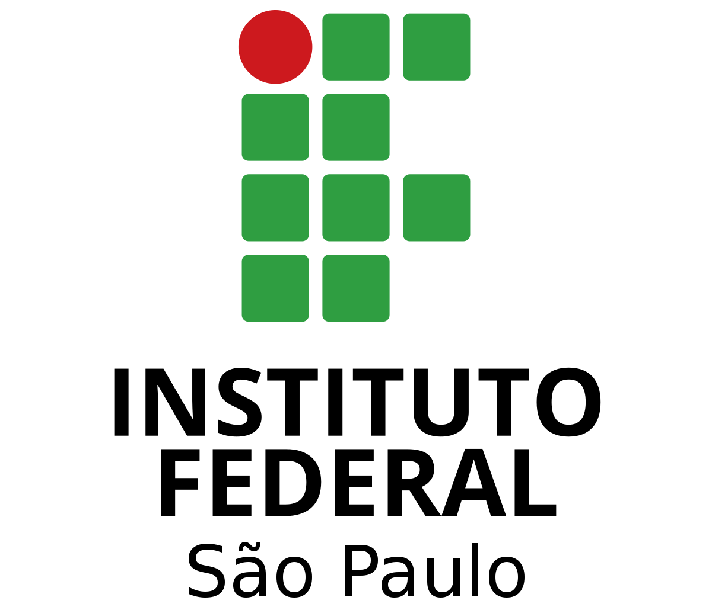
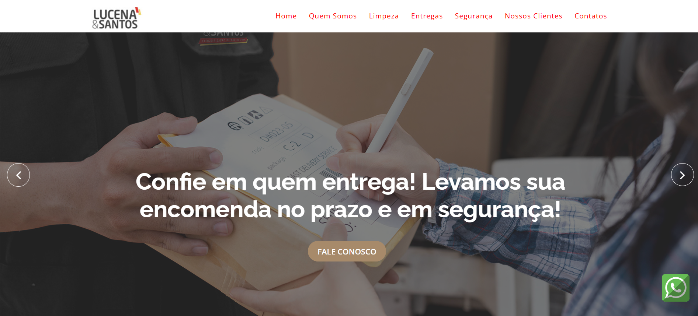
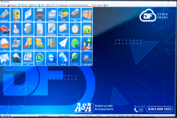
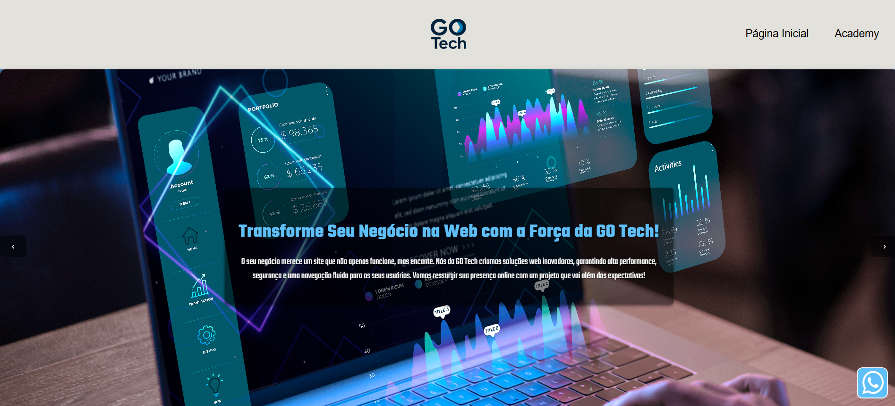

Linguagens & Front/Back
- Delphi & Pascal
- Python & Flask
- React / Next.js
- HTML5, CSS3, JavaScript
- PHP, C/C++
Full Stack Developer & Diretor de Tecnologia
Sou um profissional multidisciplinar em tecnologia e inovação. Minha trajetória transita entre o desenvolvimento Full Stack, Cloud Computing e gestão ágil de projetos. Atuo diretamente para aliar inovação tecnológica a estratégias que geram impacto real e mensurável.
Atualmente ocupo o cargo de Diretor de Tecnologia na LS&Co. Holding Empresarial. Academicamente, carrego forte bagagem pelo IFSP (Técnico), UNIVESP (Engenharia de Computação) e UniFatecie (Música).



Liderança em projetos corporativos, captação de recursos via editais, e desenvolvimento de soluções sistêmicas para o ecossistema empresarial da holding.

Sustentação e evolução arquitetural da plataforma DespaFront para Windows, programado em Delphi/Pascal. Integrações complexas sistêmicas.

Desenvolvimento focado em Full Stack sob demanda, criando soluções de automação e integração de serviços via APIs.
Alguns dos sistemas construídos e documentados publicamente no GitHub.
Transição da arquitetura de dependências em navegadores para controle interno de sessões via Delphi. Redução de falhas críticas de login e suporte.
Ver RepositórioSistema construído com Python e Flask, rodando sob conceitos de PWA para captação contínua de leads e automação de mensagens para vendas.
Ver RepositórioProjeto de iniciação científica para criar uma estrutura de funções de simulação reprodutiva em pacotes do software de análise estatística R.
Ver RepositórioEstou sempre aberto para discutir colaborações de projetos, desafios tech e oportunidades.